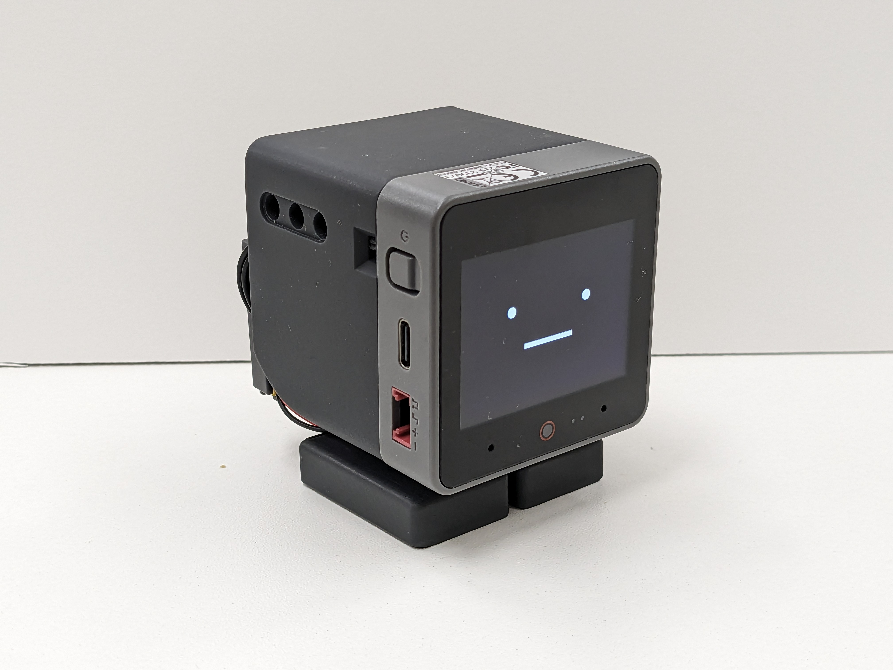

Desk companion
After 15 quiet minutes, four slower alternating turns at a 35° upward tilt, with 2.5-second holds. Returns to neutral and releases torque. Manual Look around and Auto look-around controls.
Behavior record →Research becomes visible. Focus gets a timer. Quiet moments get a gentle look-around. Face following keeps Joy looking toward you. This guide captures what is installed, what has been verified, and how to keep programming it well.

One combined companion MOD on the CoreS3 host, with local face following provided by the host itself. The latest flashed build uses the Smooth tracking preset; voice recognition requires the separate voice-enabled build. Feature-specific physical acceptance is tracked separately.
After 15 quiet minutes, four slower alternating turns at a 35° upward tilt, with 2.5-second holds. Returns to neutral and releases torque. Manual Look around and Auto look-around controls.
Behavior record →Back-and-forth top-panel strokes trigger happy eyes, hearts and a head shake. Direction changes work without lifting your finger. During a sweep, petting gets feedback immediately and waits for motor cleanup.
Input & ownership →One 20-minute focus and 5-minute rest cycle with countdown and chimes. Start, pause, resume and cancel from the sidebar. Paused timers still own the foreground; reboot clears the session.
Timer guide →Mac research stages drive the face and status strip. Completion tilts up 45°, attempts bounded local face alignment, plays a fixed recorded sentence and cleans up. Camera frames stay on the robot.
Acceptance evidence →Local wake phrase, prompt and Tomato / pause / resume / cancel commands are included. Synthetic recognition results do not establish reliable owner speech. Keep manual timer controls available.
Voice experiments →Start from the hamburger menu. Joy looks up about 45°, finds a face locally and follows with bounded head movements. A Stop icon appears on the face during tracking. Smooth was selected after an eight-stage live trial.
Controls & tuning →Dim digital face, rounded grouped sidebar and touch/clock diagnostics. Berlin follows seasonal time changes. Network time refresh now corrects drift even when the retained date looks valid.
Controls & diagnosis →Available on the CoreS3 host even when a MOD replaces default startup behavior. Face detection runs locally; camera frames are not uploaded. It follows a face location, without recognizing a person's identity.
Four parameter sets ran twice in an eight-stage, 160-second live test. Smooth felt best to the owner. It accepts more following lag for the preferred movement quality. Detection coverage varied too much to establish an automatic winner; this is a physical-observation choice, not a proven optimum.
| Setting | Smooth default |
|---|---|
| Correction interval | At least 300 ms between motor corrections; face detection continues between them. |
| Coordinate filtering | 40% new detection, 60% previous filtered position. |
| Center tolerance & gain | A 6% dead zone around the image center; correction gain 0.3 outside it. |
| Movement size & duration | At most 2.86° per correction. Movement duration is 1.5 times the larger of the detection interval and 300 ms, bounded to 180–600 ms. |
| Head limits | Yaw within ±60°; pitch from level to 60° upward. Servo-driver limits also apply. |
Keep the face inside the camera view with steady lighting, and start with slow movement. In the live trial, average inference was about 143–147 ms; command acknowledgements and retries add latency. Brief servo timeouts are retried up to three total attempts. Persistent failures stop tracking and clean up. Camera preview and servo tests stop tracking before taking over; a busy camera or petting/servo action can prevent a new session from starting.
The live sweep guide provides one command to flash diagnostic firmware, record serial logs, compare four profiles twice and produce a report. Follow the HOLD / MOVE prompts; Stop cancels. Image error and commanded movement are proxies for tracking quality, not measurements of physical acceleration. Reflash normal firmware after testing.
The shared startFaceFollowing(robot), stopFaceFollowing(robot) and isFaceFollowing(robot) functions in the host face-following module use the same session and Stop overlay as the menu. Voice triggers are not connected yet.
The robot handles local behavior. The Mac supplies research status. USB provides the development and diagnostic connection.
The installed custom firmware replaces factory firmware. Factory AI, OTA, app and dance capabilities are not automatically retained. The completion clip is fixed audio, and local face location is not identity recognition.
Keep shared hardware/UI capabilities in the host and behavior in injected controllers. A MOD startup hook replaces default hookup; explicitly restore touch reactions and subscriptions.
Serialize motor commands, bound asynchronous work and use cancellation generations. Await neutral return and torque release before a new feature takes over.
Use accumulated monotonic ticks for timers and idleness. Use synchronized wall time plus timezone/DST for the display. Unchanged polling is not activity.
Track continuous stroke reversals, reject jitter and leave input subscribed during motion. Update countdown text in place; preserve touch targets, page selection and switch state.
Use named npm targets and managed output paths. Native/UI/input changes require a host rebuild; MOD-only edits use the faster MOD flash. Wait for independent digest verification.
Node tests for pure logic; XS/Piu tests for platform behavior. Test ownership, cancellation and failure paths. A successful flash or synthetic voice probe is not physical acceptance.
Share microphone, playback and detector ownership. Bound PCM queues, account for actual AFE frames, and distinguish measured memory/frame failures from hypotheses.
Ignored local manifests hold tokens and device settings. Use authenticated bounded LAN requests. Human voice recording needs explicit approval and temporary-artifact cleanup.
| Action | How |
|---|---|
| Show the sidebar | Tap the face, then tap the top-right burger within approximately four seconds. |
| Start / stop desk movement | Desk companion → Look around / Auto look-around. Turning auto off also blocks manual sweeps. Petting remains available when no foreground owner blocks it. |
| Follow a face | Hamburger menu → Follow my Face. End with the Stop icon on the face; it appears only during tracking. |
| Run a timer | Pomodoro → Start focus; while active, use Pause/Resume or Cancel timer. Listening independently controls voice recognition. |
| Inspect touch & clock | Sidebar → Settings → Touch & clock status. Inspect samples, recognized event count and the blocking feature. Check gesture counts while stroking. |
| Connect research | Keep the Mac awake, update its LAN address in the private MOD manifest, and run the authenticated service on the LAN. |
Run from firmware/, with the SDK export and matching ESP-IDF Python environment active. Confirm the device and port first; the most recent live session used /dev/cu.usbmodem1101. Normal firmware includes face following with Smooth selected:
npm run build
npm run deploy -- --port /dev/cu.usbmodem1101The voice profile includes face following and adds the native voice components. Host flashing and MOD installation are separate steps; replace the example port with the current device port.
npm run voice:prepare
npm run build:joy-voice
npm run flash:joy-voice -- --port /dev/cu.usbmodem1101
npm run mod -- mods/research_companion/manifest.local.json --port /dev/cu.usbmodem1101Confirm Touch is ready, samples change, gesture count increases and Blocked is empty. The host recognizer must include continuous direction changes, and the combined MOD must attach petting explicitly. Foreground Pomodoro, voice and research can suppress it. Hardware presence alone does not prove a real stroke was captured.
Check the saved timezone first: saved preferences override the MOD default. Berlin has daylight-saving adjustment; other existing city presets are fixed offsets. For minute-scale drift, check Wi-Fi/SNTP and fresh telemetry. The prior skip-on-plausible-date bug is fixed.
Check current Wi-Fi IPv4 address, awake Mac, matching token/port and LAN listening interface. A changed Mac address caused a previous outage. Status uses bearer-authenticated HTTP without encryption on a trusted LAN.
Use the sidebar. Review the freshly compiled model/profile, microphone frames and negative controls; do not infer human accuracy from a synthetic probe or lower thresholds blindly. Voice acceptance remains open.
| Record | Last recorded result |
|---|---|
| Latest merged firmware | 49bbe1ea · face following and live parameter sweep merged into main via PR #4, 8 October 2026. |
| Desk companion checkpoint | d1704bf1 · stable/joy-desk-companion-2026-10-06 |
| Repository cleanup | a7401233 · main only; six Actions workflows removed. Local build/test scripts remain. |
| Face-following checks · 8 Oct | 433 unit tests, 5 Python analysis tests, XS face-init simulator lifecycle and scoped Biome checks passed. Default CoreS3 firmware built, flashed and verified against all three images. |
| Live face trial · 8 Oct | All eight stages completed. Detection, servo acknowledgements and transient timeout recovery observed. Smooth selected from the owner's physical feedback; unequal face visibility prevented a conclusive automatic ranking. |
| Earlier checks · 6 Oct | 413 unit · 9 desk · 20 Pomodoro · 37 research/service tests passed. Native Piu drawer checks and formatting checks passed. |
| Earlier artifacts · 6 Oct | Three host flash images independently matched; combined MOD digest matched, 205,588-byte archive. |
| Earlier telemetry · 6 Oct | Touch panel present, idle samples [0,0,0], no blocking owner, Berlin UTC+2. Clock difference from Mac approximately 0.112 seconds. |
Records from 6 and 8 October 2026 are dated separately. This page is an offline documentation snapshot, not live telemetry. No CI pipeline is active; reported counts refer to completed manual runs. Other hardware targets were not validated for these changes.
Markdown owns the detailed guidance. Historical feature records preserve the evidence behind it.